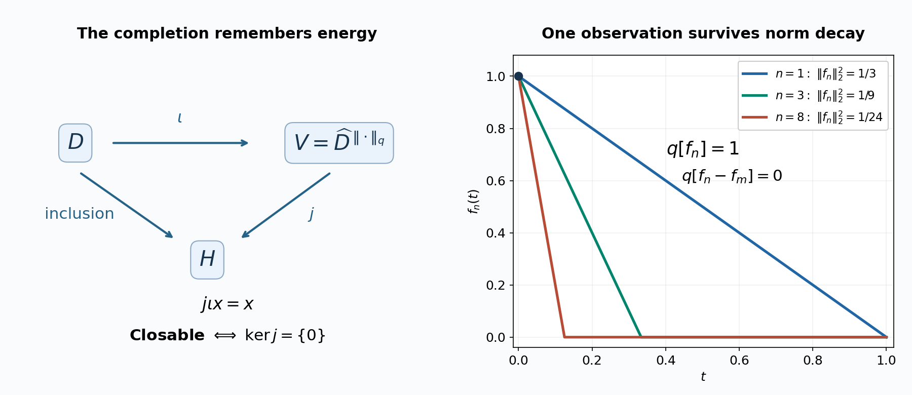

Closing energy domains and comparing resolvents
Self-checked by the writing AI.
A quadratic expression on a convenient set of vectors does not yet determine a closed energy form. One must check whether limits in the energy norm still identify vectors uniquely in the original Hilbert space. This unit makes that test explicit, constructs the smallest closed extension, and explains which dense sets actually determine a form. It then recovers domain inclusion from the order of one pair of resolvents.
The construction starts with the map from an energy-space completion to the original Hilbert space. Barry Simon's freely accessible paper describes this map and its closability test; we prove every step, including nondense domains, and supply the order argument through a bounded factorization below. The distinction between an operator domain and a form domain is also treated in the free paper of Zoltán Sebestyén and Zsigmond Tarcsay. Precise source loci appear at the end.
Objects and dependencies
Let \(H\) be any complex Hilbert space, with inner product linear in its first variable. Let \(q\) be a nonnegative sesquilinear form on a linear subspace \(D\subseteq H\). Density of \(D\) is not assumed. Write
\[ q[x]=q(x,x),\qquad \|x\|_q^2=\|x\|^2+q[x]. \]A form \(r\) extends \(q\) if \(D\subseteq D(r)\) and \(r(x,y)=q(x,y)\) for \(x,y\in D\). We call \(q\) closable if it has a closed nonnegative extension on \(H\). Here closedness means completeness of the form domain in its form norm. Extension is a statement about domains and values; it does not mean the ordering of extended diagonals defined in OA-MOD-QF-02.
The Hilbert-space inputs have complete preceding proofs in The bounded prerequisite boundary: inner-product completion, continuous extension from a dense subspace, orthogonal projection, Riesz representation, bounded adjoints and the range-kernel identity. Its preceding real Hilbert proof supplies projection and real Riesz representation; the complex conversion is in BK-01. The nonnegative-form Cauchy–Schwarz inequality is proved in A form includes its domain. In particular \(\|\cdot\|_q\) is an inner-product norm.
The operator applications use Representation with the exact square-root domain for closed-form representation with its exact operator and square-root domains, Resolvents as energy minimizers for the energy variational formula, and Problems with solutions, Problem 5 for finite sums. The spectral integral construction and its domains are proved in Bounded Borel functions and the spectral measure–Changes of variable, powers, and actual ranges, with the cutoff convergence in Convergence and cutoffs. FC-06 proves its bounded factorization directly on a Hilbert space; it needs no weight, algebra-membership or bicommutant argument. FC-07 recalls the elementary adjoint-inclusion proof.
For the solved models, SS1 proves the scalar \(L^2\) construction, Cauchy–Schwarz and completeness. Weighted sequence norms are the same construction for counting measure with positive weights, or the isometric change of variables \(x_n\mapsto w_n^{1/2}x_n\). The finite-coordinate truncations converge because the defining nonnegative series has vanishing tails. The elementary series comparisons used below require no summation formula: for \(n\ge2\), \(n^{-2}\le (n-1)^{-1}-n^{-1}\), so \(\sum n^{-2}<\infty\), whereas each block \(2^k\le n<2^{k+1}\) contributes at least \(1/2\) to \(\sum n^{-1}\).
The completion test and canonical closure
Theorem. Complete the inner-product space \((D,\langle\cdot,\cdot\rangle_q)\) to a Hilbert space \(V\), and denote its isometric dense inclusion by \(\iota:D\to V\). There is a unique contraction \(j:V\to H\) satisfying \(j\iota x=x\). The following conditions are equivalent:
- \(q\) has a closed nonnegative extension on \(H\).
- If \(x_n\in D\), \(x_n\to0\) in \(H\), and \(q[x_n-x_m]\to0\) as \(n,m\to\infty\), then \(q[x_n]\to0\).
- \(j\) is injective.
When they hold, the closure \(\overline q\) has the exact domain and values
\[ \begin{aligned} D(\overline q)&=j(V),\\ \overline q(ju,jv) &=\langle u,v\rangle_V-\langle ju,jv\rangle_H \qquad(u,v\in V). \end{aligned} \]It is closed, extends \(q\), and its original domain \(D\) is dense in \(D(\overline q)\) for the form norm. Every closed extension of \(q\) extends \(\overline q\).
Proof. The inclusion \(D\to H\) has norm at most one for the form norm, so it extends uniquely to the contraction \(j\).
Suppose \(r\) is a closed extension. Under the hypotheses of condition 2, the sequence \(x_n\) is Cauchy for the \(r\)-norm: its Hilbert-norm differences and its form differences both tend to zero. Completeness gives a limit in \(D(r)\). The continuous inclusion into \(H\) identifies that limit as zero. Hence \(q[x_n]=r[x_n]\to0\). This proves \(1\Rightarrow2\).
If \(u\in\ker j\), choose \(x_n\in D\) with \(\iota x_n\to u\) in \(V\). Then \(x_n\to0\) in \(H\) and \(q[x_n-x_m]\to0\). Condition 2 gives
\[ \|u\|_V^2=\lim_n\bigl(\|x_n\|^2+q[x_n]\bigr)=0. \]Thus \(j\) is injective. Conversely, a sequence as in condition 2 is Cauchy in the form norm, so \(\iota x_n\) converges to some \(u\in V\). Its Hilbert limit gives \(ju=0\). Injectivity forces \(u=0\), proving condition 2.
Now assume injectivity. The displayed formula is well-defined because a vector of \(j(V)\) has a unique preimage. It is sesquilinear and nonnegative since \(j\) is a contraction. Moreover,
\[ \|ju\|^2+\overline q[ju]=\|u\|_V^2. \]Thus \(j\), viewed as a map from \(V\) onto the new form domain with its form norm, is an isometry onto a complete space. This proves closedness. Substitution of \(u=\iota x\) and \(v=\iota y\) shows extension. Density of \(\iota(D)\) proves the asserted density in form norm.
Finally, let \(r\) be any closed extension. For \(u\in V\), choose \(\iota x_n\to u\). The sequence is Cauchy for the \(r\)-norm and hence converges there to a vector \(y\in D(r)\). In \(H\) it converges to \(ju\), so \(y=ju\). Passing to the limit in the \(r\)-inner product, for two such sequences, proves \(r(ju,jv)=\overline q(ju,jv)\). Hence \(r\) extends \(\overline q\). \(\square\)
The range \(j(V)\) need not be closed in \(H\). It is complete for a stronger norm. No bounded inverse \(j^{-1}:j(V)\to V\) for the Hilbert norm is asserted.
An equivalent concrete description is useful:
\[ D(\overline q)= \left\{x\in H: \begin{array}{l} \text{some }x_n\in D\text{ converges to }x\text{ in }H,\\ q[x_n-x_m]\longrightarrow0 \end{array} \right\}, \qquad \overline q[x]=\lim_n q[x_n]. \]The completion theorem proves both existence and independence of the limit; Hilbert-norm convergence by itself does not.
Closedness and lower semicontinuity on all vectors
For any form \(q\), define \(\widetilde q:H\to[0,\infty]\) by \(q[x]\) on \(D(q)\) and \(+\infty\) elsewhere.
Theorem. A nonnegative form is closed if and only if \(\widetilde q\) is lower semicontinuous in the norm topology of \(H\). No density hypothesis is required.
Proof of necessity without spectral calculus. If \(q\) is closed, put \(V=D(q)\) with its form norm and let \(j:V\to H\) be its inclusion. For \(x\in H\), set
\[ G(x)=\sup_{f\in H} \left(2\operatorname{Re}\langle x,f\rangle_H -\|j^*f\|_V^2\right). \]We claim that
\[ G(x)=\|x\|^2+\widetilde q[x]. \]First, \(\operatorname{ran}j^*\) is dense in \(V\): a vector orthogonal to that range lies in \(\ker j=\{0\}\). If \(x=ju\), the expression in the supremum equals
\[ 2\operatorname{Re}\langle u,j^*f\rangle_V-\|j^*f\|_V^2 =\|u\|_V^2-\|u-j^*f\|_V^2. \]Density gives \(G(ju)=\|u\|_V^2=\|ju\|^2+q[ju]\).
If \(G(x)=C<\infty\), the term \(f=0\) gives \(C\geq0\). Varying a complex scalar multiplying \(f\), and minimizing the corresponding quadratic, gives
\[ |\langle x,f\rangle|^2\leq C\|j^*f\|_V^2 \qquad(f\in H). \]When \(j^*f=0\), the same conclusion follows by scaling the linear term: it must vanish. Therefore \(j^*f\mapsto\langle x,f\rangle\) is a well-defined bounded conjugate-linear functional on the dense subspace \(\operatorname{ran}j^*\). By Riesz representation it has the form \(\langle u,j^*f\rangle_V\) for some \(u\in V\). The adjoint identity then gives \(\langle x,f\rangle=\langle ju,f\rangle\) for every \(f\), so \(x=ju\). Consequently \(G(x)=+\infty\) outside \(j(V)\), proving the claim.
Each function in the supremum defining \(G\) is norm continuous and real-valued. Hence \(G\) is lower semicontinuous. Subtraction of the continuous function \(x\mapsto\|x\|^2\) proves that \(\widetilde q\) is lower semicontinuous.
Proof of sufficiency. Let \(x_n\) be Cauchy in the form norm. It has a Hilbert-norm limit \(x\). The numbers \(q[x_n]\) are bounded, so lower semicontinuity implies \(\widetilde q[x]<\infty\), or \(x\in D(q)\). For any \(\varepsilon>0\), choose \(N\) with \(q[x_n-x_m]\leq\varepsilon^2\) for \(n,m\geq N\). For each fixed \(n\geq N\), lower semicontinuity applied as \(m\to\infty\) gives
\[ q[x_n-x]\leq\liminf_m q[x_n-x_m]\leq\varepsilon^2. \]Thus \(x_n\to x\) in the form norm. The domain is complete. \(\square\)
The proof uses sequences only for completeness in a metric norm; it places no countability condition on a basis or on later families of forms. The supremum formula proves topological lower semicontinuity directly.
Closability and lower semicontinuity on the given domain
Theorem. A nonnegative form \(q\) on \(D\subseteq H\) is closable if and only if the function \(x\mapsto q[x]\) is lower semicontinuous on \(D\) for the topology inherited from the Hilbert norm.
Equivalently, for every sequence \(x_n\in D\) with Hilbert-norm limit \(x\in D\),
\[ q[x]\leq\liminf_n q[x_n]. \]Proof. If \(q\) is closable, its closure is closed by OA-MOD-FC-02. The extended diagonal of that closure is lower semicontinuous by OA-MOD-FC-03. Restriction to \(D\) gives the assertion.
Conversely, suppose the stated relative lower semicontinuity holds. Let \(x_n\) satisfy condition 2 of OA-MOD-FC-02. For fixed \(n\), the sequence \(x_n-x_m\) lies in \(D\) and converges in \(H\) to \(x_n\in D\). Hence
\[ q[x_n]\leq\liminf_m q[x_n-x_m]. \]The right side is arbitrarily small for all sufficiently large \(n\), by the form-Cauchy hypothesis. Thus \(q[x_n]\to0\), and OA-MOD-FC-02 supplies a closed extension. \(\square\)
The distinction between the two topologies of the assertion is substantive. A zero form on a proper dense subspace is closable. Its extension by infinity is not lower semicontinuous on \(H\), so the original form is not closed. Both claims are checked explicitly in OA-MOD-FC-08.
Cores determine the domain, not just a dense set of vectors
For a closed form \(q\), a linear subspace \(E\subseteq D(q)\) is a form core if it is dense in \(D(q)\) for \(\|\cdot\|_q\).
Proposition. The restriction \(q|_E\) is closable, and its closure is exactly \(q\) if and only if \(E\) is a form core. More generally, its closed domain is the closure of \(E\) inside the form Hilbert space \(D(q)\), with the restricted form.
Proof. The original \(q\) is a closed extension. Complete \(E\) in the restricted form norm. Its completion is the closed subspace \(\overline E^{\|\cdot\|_q}\) of the Hilbert space \(D(q)\). The inclusion of this subspace into \(H\) is injective. OA-MOD-FC-02 therefore identifies the closure with exactly this subspace and this form. It equals \(q\) precisely when the subspace is all of \(D(q)\). \(\square\)
Spectral core proposition. Let \(A\geq0\) be self-adjoint and \(q_A[x]=\|A^{1/2}x\|^2\). Then \(D(A)\) is a form core. The subspace
\[ E_{\mathrm{cut}} =\bigcup_{n\geq1} E_A([0,n])H \]is both a form core for \(q_A\) and an operator core for \(A\). An operator core means density in \(D(A)\) for \((\|x\|^2+\|Ax\|^2)^{1/2}\).
Proof. For \(x\in D(A^{1/2})\), write \(x_n=E_A([0,n])x\). It lies in \(D(A)\), and
\[ \|x-x_n\|_{q_A}^2 =\int_{(n,\infty)}(1+t)\,d\langle E_A(t)x,x\rangle \longrightarrow0. \]The integral is finite because \(x\in D(A^{1/2})\). The same truncations applied to \(x\in D(A)\) give convergence in the operator graph norm by replacing \(1+t\) with \(1+t^2\). This proves both assertions. \(\square\)
Any operator core for \(A\) is a form core: graph-norm convergence implies form-norm convergence because \(t\leq1+t^2\), and \(D(A)\) is already a form core. Mere density in \(H\) is insufficient; a dense subspace can be closed and proper in the form norm, as OA-MOD-FC-08 demonstrates.
One resolvent inequality recovers the whole form order
Bounded factorization. Let \(X:H\to K\) and \(Y:H\to L\) be bounded maps of Hilbert spaces and assume \(Y^*Y\le X^*X\). On \(\operatorname{ran}X\), define \(V(X\xi)=Y\xi\). The inequality
\[ \|Y\xi\|^2\le\|X\xi\|^2 \tag{FC.1} \]makes the definition independent of the preimage and contractive. It extends uniquely to \(\overline{\operatorname{ran}X}\), and extension by zero on its orthogonal complement gives a contraction \(V:K\to L\) with \(Y=VX\). This is the unique such contraction required to vanish on that complement. The construction includes zero spaces and noninjective \(X\); no inverse of \(X\) was assumed.
Theorem. For nonnegative self-adjoint operators \(A_1,A_2\) on \(H\), the following are equivalent:
-
\(D(A_2^{1/2})\subseteq D(A_1^{1/2})\), and \(\|A_1^{1/2}x\|^2\leq\|A_2^{1/2}x\|^2\) on \(D(A_2^{1/2})\).
-
For some \(\lambda>0\),
\[ (A_2+\lambda I)^{-1}\leq(A_1+\lambda I)^{-1}. \] -
The inequality in condition 2 holds for every \(\lambda>0\).
The operators need not commute. The inequality in condition 1 is between forms, not an assertion that the unbounded operators have the same domain.
Proof. OA-MOD-QF-05 gives \(1\Rightarrow3\), and \(3\Rightarrow2\) is immediate. Fix a \(\lambda\) as in condition 2 and put
\[ B_j=(A_j+\lambda I)^{-1},\qquad j=1,2. \]Both operators are bounded, positive, and injective. Apply (FC.1) to \(X=B_1^{1/2}\) and \(Y=B_2^{1/2}\); then \(Y^*Y=B_2\le B_1=X^*X\). It gives \(B_2^{1/2}=V B_1^{1/2}\) for a contraction \(V\). Taking adjoints, using that the square roots are self-adjoint, gives
\[ B_2^{1/2}=B_1^{1/2}C,\qquad C=V^*,\quad\|C\|\leq1. \]The spectral calculus gives actual range equalities and norms
\[ \operatorname{ran}B_j^{1/2}=D(A_j^{1/2}),\qquad \|B_j^{-1/2}x\|^2 =\lambda\|x\|^2+\|A_j^{1/2}x\|^2. \]Here the domain equalities can be checked at the scalar level, rather than inferred formally from inverse symbols. The functions \((t+\lambda)^{1/2}\) and \(t^{1/2}\), for \(t\ge0\), have the same squared-integrability domain, because
\[ \min(1,\lambda)(1+t)\le t+\lambda\le\max(1,\lambda)(1+t). \tag{FC.2} \]The function \((t+\lambda)^{-1/2}\) is bounded and never zero. SK-07's proved inverse-range rule therefore identifies its range with that domain, and its inverse has squared norm equal to the integral of \(t+\lambda\). This proves both displayed assertions with their actual domains.
For \(x\in D(A_2^{1/2})\), let \(\xi=B_2^{-1/2}x\). Then
\[ x=B_2^{1/2}\xi=B_1^{1/2}C\xi. \]Thus \(x\in D(A_1^{1/2})\). Injectivity of \(B_1^{1/2}\) gives \(B_1^{-1/2}x=C\xi\), and therefore
\[ \lambda\|x\|^2+\|A_1^{1/2}x\|^2 =\|C\xi\|^2 \leq\|\xi\|^2 =\lambda\|x\|^2+\|A_2^{1/2}x\|^2. \]Canceling the Hilbert-norm term proves condition 1. \(\square\)
This argument reads the form domain directly from the range of a bounded square root. It does not infer domain inclusion from a pointwise inequality on a previously chosen common subspace.
When a form sum equals an operator sum
Let \(A_1,\ldots,A_m\geq0\) be self-adjoint, and assume
\[ D=\bigcap_{k=1}^m D(A_k^{1/2}) \]is dense in \(H\). The sum \(q[x]=\sum_k\|A_k^{1/2}x\|^2\) is closed on \(D\), by the finite-sum proof in OA-MOD-QF-10. Its representing nonnegative self-adjoint operator is the form sum, denoted \(A_{\mathrm{form}}\).
Proposition. On \(D_{\mathrm{alg}}=\bigcap_k D(A_k)\), the algebraic sum \(Sx=\sum_k A_kx\) is a restriction of \(A_{\mathrm{form}}\). If \(S\) is densely defined and essentially self-adjoint on that domain, then
\[ A_{\mathrm{form}}=\overline S. \]Proof. If \(x\in D_{\mathrm{alg}}\) and \(v\in D\), the spectral pairing identity gives
\[ q(x,v)=\sum_k\langle A_kx,v\rangle =\langle Sx,v\rangle. \]The graph characterization in OA-MOD-QF-03 yields \(x\in D(A_{\mathrm{form}})\) and \(A_{\mathrm{form}}x=Sx\). Since \(A_{\mathrm{form}}\) is closed, \(\overline S\subseteq A_{\mathrm{form}}\).
For densely defined operators, \(T\subseteq U\) implies \(U^*\subseteq T^*\): the adjoint identity holding for every vector in the larger domain also holds in the smaller domain, with the same representing vector. If \(S\) is essentially self-adjoint, both \(\overline S\) and \(A_{\mathrm{form}}\) are self-adjoint. Taking adjoints of their inclusion gives the reverse inclusion. Hence equality holds. \(\square\)
Density of \(D\) alone does not assert essential self-adjointness of \(S\), or even density of \(D_{\mathrm{alg}}\). Those are separate hypotheses in the stated implication.
Problems with complete solutions
Problem 1: two semicontinuity assertions. In \(H=\ell^2(\mathbb N)\), put \(D=c_{00}\) and \(q[x]=0\) on \(D\). Determine closedness, closability, and the closure.
Solution. The form norm is the Hilbert norm, and the completion is \(H\), with injective extension of the inclusion. Hence \(q\) is closable and its closure is the zero form on all of \(H\). It is not closed: for instance the truncations of \((2^{-n})_{n\geq1}\) form a Cauchy sequence in \(D\) whose Hilbert limit is outside \(D\). On \(D\), the diagonal is the constant zero function and is continuous. Extended by infinity to \(H\), it is not lower semicontinuous at that limit: the approximating energies are zero and the value at the limit is infinite.
Problem 2: a singular observation. Regard \(D=C([0,1])\) as a subspace of \(L^2([0,1])\) and put \(q(f,g)=f(0)\overline{g(0)}\). Is it closable?
Solution. A continuous function vanishing almost everywhere is zero everywhere, so the identification of \(D\) with its \(L^2\)-class is injective and the form is well-defined. Let \(f_n(t)=\max(1-nt,0)\). Then
\[ \|f_n\|_2^2=\frac1{3n},\qquad q[f_n-f_m]=0,\qquad q[f_n]=1. \]Thus the completion test in OA-MOD-FC-02 fails. There is no closed extension of this form agreeing with it on all continuous functions. The issue is the form's observation at a single point, which the Hilbert norm cannot detect.
Problem 3: Hilbert density without a form core. On \(\ell^2(\mathbb N)\), let
\[ D(q)=\left\{x:\sum_{n\geq1}n^2|x_n|^2<\infty\right\}, \qquad q[x]=\sum_{n\geq1}n^2|x_n|^2. \]Set \(\ell(x)=\sum_{n\geq1}x_n\) and \(E=\ker\ell\) inside \(D(q)\). Prove that \(E\) is dense in \(H\) but is not a form core.
Solution. Weighted Cauchy–Schwarz gives
\[ \sum_n|x_n| \leq\left(\sum_n n^2|x_n|^2\right)^{1/2} \left(\sum_n n^{-2}\right)^{1/2}. \]Thus \(\ell\) is defined and continuous for the form norm. Its kernel is a proper closed subspace of the form Hilbert space, since \(\ell(e_1)=1\). It cannot be a form core.
To see Hilbert density, let \(x\) have finite support. Choose a block of \(N\) coordinates outside that support, and let \(h_N\) equal \(1/N\) on that block and zero elsewhere. Then \(\ell(h_N)=1\), \(\|h_N\|=N^{-1/2}\), and \(x-\ell(x)h_N\in E\) converges to \(x\) in \(H\). Finite-support vectors are dense in \(H\), so \(E\) is dense there. The restriction \(q|_E\) is already closed, since \(E\) is closed in the form norm. Its closure is itself and is a proper restriction of \(q\).
Problem 4: one parameter and different domains. On \(\ell^2(\mathbb N)\), let \(A_1\) be multiplication by \(n\) and \(A_2\) multiplication by \(n^2\), each on its maximal operator domain. Verify the three equivalent assertions of OA-MOD-FC-06 and show that their form domains differ.
Solution. The scalar inequality
\[ \frac1{n^2+\lambda}\leq\frac1{n+\lambda} \qquad(n\geq1,\ \lambda>0) \]gives resolvent order. The form domains are the weighted spaces with energies \(\sum n|x_n|^2\) and \(\sum n^2|x_n|^2\), respectively. The second lies in the first and has the larger energy. The vector \(x_n=n^{-3/2}\) has finite first energy \(\sum n^{-2}\) and infinite second energy \(\sum n^{-1}\). Thus the inclusion is strict. Resolvent order recovers this inclusion; it does not erase it.

Figure. The left panel is the exact completion diagram in FC-02: \(j\iota x=x\), and closability is equivalent to \(\ker j=\{0\}\). It depicts maps, not an embedding of an infinite-dimensional space in the plane. The right panel plots exactly \(f_n(t)=\max(1-nt,0)\) for \(n=1,3,8\) from Problem 2. Every point-observation energy is \(1\), every difference has energy zero, and \(\|f_n\|_2^2=1/(3n)\). The limiting element of the energy completion has norm \(1\) and is sent to zero by \(j\), so it is a nonzero kernel vector. This last claim follows because \(f_n\) is Cauchy in the energy norm and \(\|f_n\|_q^2=1+1/(3n)\to1\). Reproducible drawing source.
Use in the weight course
For a candidate spatial energy initially defined on bounded vectors, OA-MOD-FC-02 reduces closability to a concrete zero-limit test. OA-MOD-FC-05 explains the additional assertion required when a construction calls those bounded vectors a core. Once the form has been represented, OA-MOD-FC-06 turns a bounded resolvent inequality into the full domain-and-energy order statement.
These implications do not themselves prove the density or closability of any particular spatial form. Those weight-theoretic hypotheses remain in the spatial-derivative unit. The results here also do not replace the spectral-calculus foundation needed by the operator applications.
References and proof provenance
- Barry Simon, A canonical decomposition for quadratic forms with applications to monotone convergence theorems, freely accessible author copy, Section 1, pp. 377–378. The energy-completion map and its kernel test are the source comparison for FC-02. Proposition 1.1 states resolvent/form order; FC-06 supplies the complete factorization and domain proof here. No external proof pointer in the paper is used as a programme proof.
- Zoltán Sebestyén and Zsigmond Tarcsay, Basic representation theorems of forms, arXiv:2505.09588v1, Section 2, Lemma 2.1, pp. 2–3, and Corollaries 2.7–2.8, p. 7. These give a free comparison for form representation and closability. FC-02–FC-04 supply the nondense-domain arguments in full; the operator representation used here is the earlier QF-03 proof.
The original programme proofs and all four solved problems are retained. The local factorization, explicit inverse-domain check, elementary model prerequisites and completion illustration were added by GPT-6 Astra (OpenAI), Ultra, October 2026. Original programme exposition and the new additions are CC0-1.0; no human source prose or figure is imported.